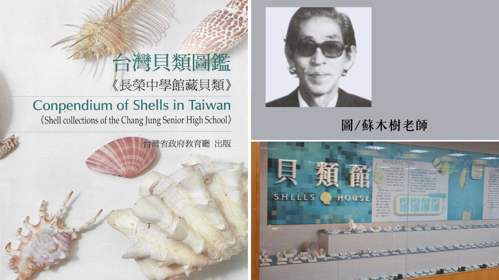

豐富的海洋記憶
在這裡，每一枚貝殼都是大自然的藝術品。擁有著646件的實體貝殼，提供給長榮中學的學生，最真實的標本。
長榮中學貝類館
蘇木樹老師生於民國十四年，從學生時代就對考古人類學及地球科學有濃厚興趣。民國87年得知長榮中學要建立貝類館，並捐獻656種貝類給長榮中學，也接下規劃長榮中學貝類館重任。另外也出版「台灣貝類圖鑑《長榮中學館藏貝類》」並由台灣省政府教育廳出版。

在這裡，每一枚貝殼都是大自然的藝術品。擁有著646件的實體貝殼，提供給長榮中學的學生，最真實的標本。